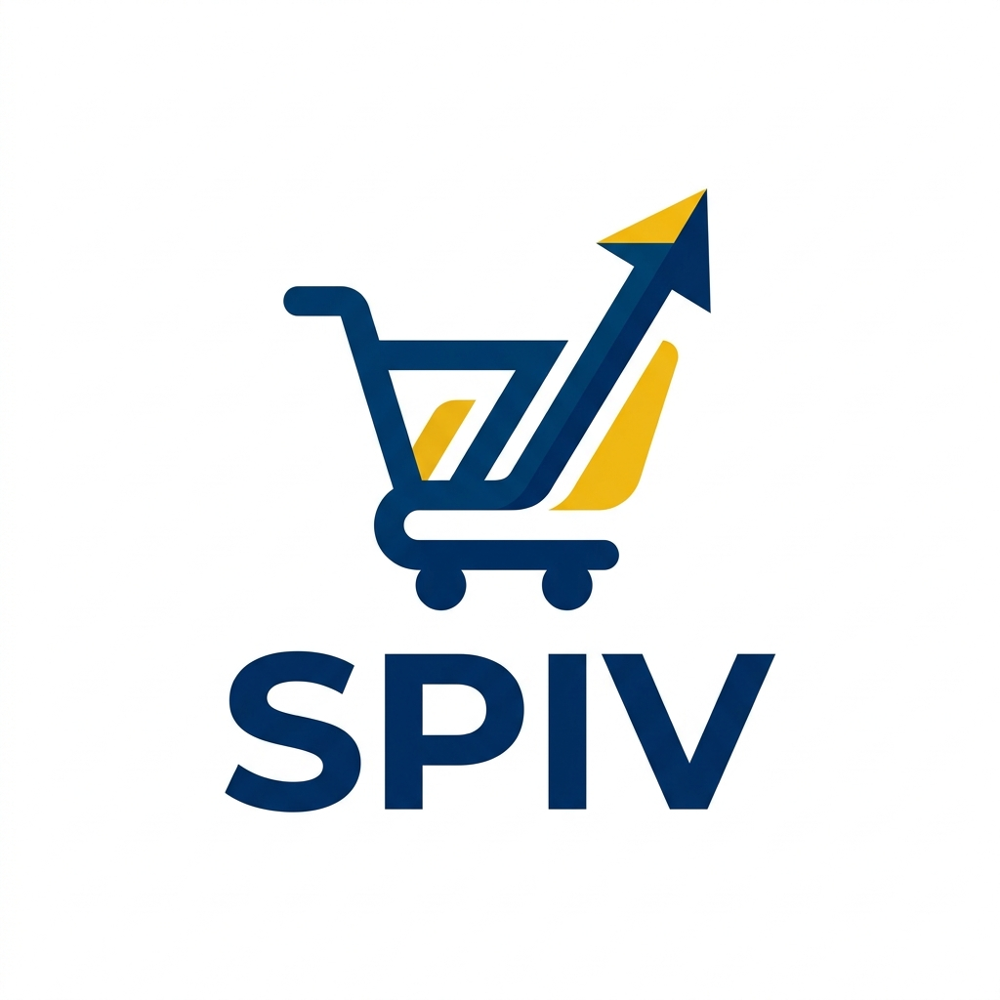
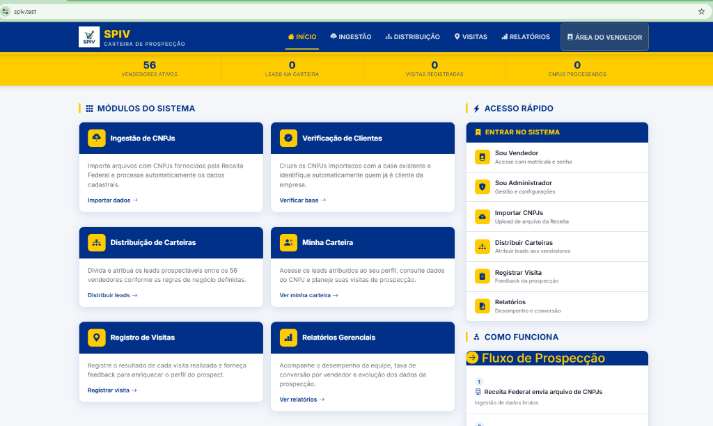
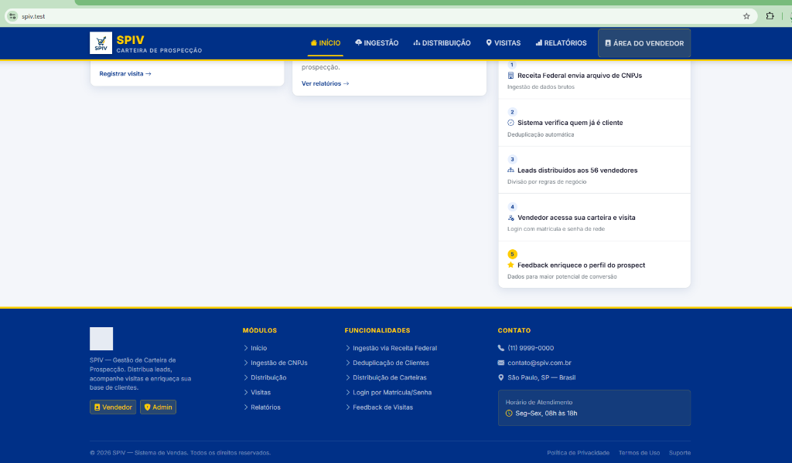

Uma plataforma de gestão de carteiras de prospecção que transforma dados brutos da Receita Federal em inteligência comercial real — na mão certa, na hora certa.
Toda equipe de vendas tem um inimigo silencioso: a falta de visibilidade. Sem um sistema centralizado, prospectar se torna uma atividade cara, imprecisa e difícil de medir.
Listas de CNPJs chegam por e-mail, planilhas e sistemas desconectados. Não há rastreabilidade de origem, nem cruzamento com a base de clientes.
Dois vendedores prospectando o mesmo CNPJ. Clientes existentes sendo abordados como novos. Esforço desperdiçado, relação desgastada.
O resultado de cada visita some no caderno do vendedor. A empresa não aprende, não acumula inteligência e repete os mesmos erros.
"Quando não há sistema, o vendedor é a memória da empresa. E memória humana não escala."
— Premissa do MVP Setorial SPIVO MVP Setorial SPIV é um sistema web desenvolvido especificamente para estruturar, distribuir e acompanhar o trabalho de prospecção da equipe comercial — do dado bruto da Receita Federal até o feedback enriquecido de campo.
CNPJs fornecidos pela RFB são ingeridos, validados e cruzados automaticamente com a base de clientes existente. Só chegam ao vendedor os prospects reais.
Cada vendedor acessa o sistema com matrícula e senha de rede. Vê somente sua carteira, registra visitas e alimenta a base com dados reais de campo.
O gestor define as regras e o sistema distribui os leads entre os 56 vendedores, eliminando sobreposições e garantindo equilíbrio de carga.
Cada visita registrada enriquece o perfil do prospect. Com o tempo, a base acumula sinais de mercado que alimentam análises preditivas.
Visual profissional, cores corporativas e estrutura clara. Cada elemento da tela foi pensado para acelerar o trabalho do vendedor e do gestor.
O corpo da página apresenta os 6 grandes módulos operacionais, com acesso rápido à direita e o fluxo do processo de prospecção explicado passo a passo.

O painel "Como Funciona" educa o vendedor sem treinamento formal. O rodapé reforça os módulos e o posicionamento institucional do sistema.

Cinco etapas que transformam um arquivo de CNPJs num ciclo de inteligência comercial contínuo e rastreável — com cada passo registrado no sistema.
Arquivo de CNPJs é fornecido pela RFB e importado no módulo de Ingestão.
Sistema cruza automaticamente com a base de clientes e remove os já atendidos.
Gestor define as regras. Sistema divide os leads entre os 56 vendedores.
Vendedor acessa com matrícula, vê sua carteira e realiza as visitas.
Cada retorno de campo enriquece o perfil do prospect e alimenta a base analítica.
"A maioria das empresas prospecta. Poucas aprendem com o que prospectam. O SPIV é o sistema que fecha esse loop — transformando o campo numa fonte permanente de inteligência de mercado."
— Visão estratégica do MVP SetorialO SPIV não é uma ferramenta para o vendedor. É um instrumento de gestão. O gestor ganha visibilidade total que hoje simplesmente não existe.
Veja em tempo real quem visitou, quem está com carteira parada e quem está convertendo mais.
Cada CNPJ tem histórico completo: de onde veio, para quem foi, quantas vezes foi visitado e com qual resultado.
A cada ciclo de prospecção, a base fica mais rica. O sistema aprende com o campo e melhora as próximas rodadas.
✅ Fim das planilhas paralelas — um sistema, uma verdade, todos alinhados.
✅ Sem mais sobreposição — dois vendedores jamais abordarão o mesmo CNPJ simultaneamente.
✅ Login com credenciais de rede — zero custo de onboarding. O vendedor já sabe sua senha.
✅ Relatórios gerenciais nativos — desempenho por vendedor, taxa de conversão e evolução da carteira.
Este MVP é apenas o ponto de partida. O roadmap está planejado para evoluir de forma incremental, cada fase adicionando uma camada de valor.
Interface completa, ingestão de CNPJs, deduplicação, distribuição de carteiras, login por matrícula, registro de visitas e relatórios básicos.
Distribuição por território, segmento de mercado, porte do CNPJ e histórico do vendedor. Balanceamento automático de carga de trabalho.
Cada feedback de visita alimenta um modelo de scoring de prospects. O sistema passa a sugerir quais CNPJs têm maior potencial de conversão.
Dashboard gerencial com análise preditiva, identificação de padrões de mercado, alertas proativos e integração com sistemas de CRM corporativo.
Construído em PHP / CodeIgniter 4 com banco PostgreSQL e frontend Bootstrap 5. Stack sólida, madura e escalável.
HTTPS nativo com certificado local. Autenticação por matrícula e senha de rede corporativa. Acesso segmentado por perfil: vendedor e administrador.
Não estamos apenas organizando planilhas ou digitalizando o que já existe. Estamos construindo a infraestrutura de inteligência comercial que a SPIV nunca teve — e que os concorrentes ainda não têm.
Com o MVP Setorial funcionando, cada visita de cada vendedor deixa de ser uma ação isolada e passa a ser um dado valioso que melhora a próxima rodada de prospecção. A base cresce, o scoring melhora, a conversão aumenta — num ciclo virtuoso e contínuo.
"No futuro próximo, a SPIV não vai mais só prospectar clientes. Ela vai prever quais prospects têm maior probabilidade de se tornarem clientes — com base nos dados que esse sistema está começando a acumular hoje."
— Visão de longo prazo do Projeto SPIV
Ambiente local — https://spiv.test |
MVP Setorial SPIV | Junho de 2026